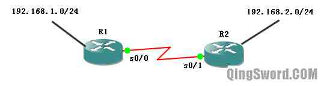
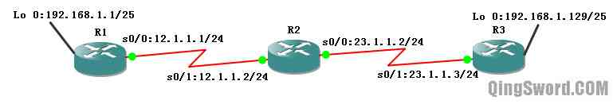
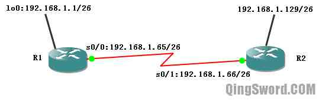
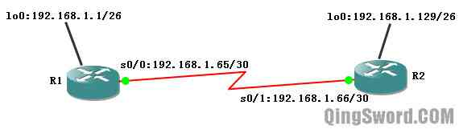

[CCNA图文笔记]-14-RIPv1协议缺陷详解
引言
这篇文章首先介绍一下VLSM（Variable Length Subnet Masking，变长子网掩码）技术以及CIDR（Classless Inter-Domain Routing，无类域间路由）技术，之后将讨论RIPv1的不足。
文章目录
- 0×1.VLSM实例
- a.VLSM适用协议
- 0×2.借用IP地址(ip unnumbered)
- 0×3.CIDR浅析
- 0×4.RIPv1的局限性
- a.不支持不连续子网演示
- b.什么是主类网络的边界
- c.不支持VLSM
- d.RIPv1局限总结
0×1.VLSM实例
传统的A/B/C类网络，使用固定长度的子网掩码；VLSM允许在同一个网络地址空间中使用多个子网掩码，可以对子网再进行子网划分。
实例：假设一个公司申请到一个C类网络地址201.1.1.0/24，该公司一共5个项目组，其中A项目组100台计算机，B项目组50台计算机其他3个项目组各有10台计算机，为了安全，需要将各项目组分在不同的子网里面，仅能使用201.1.1.0/24这个地址的情况下（不允许使用私有保留地址），如何划分子网？
针对这个实例，用前面介绍过的固定的子网长度划分办法就就行不通了，所以要用到VLSM；
1）首先，申请到的C类地址前24位是固定的，公司只能变动后8位来满足自身需求。先看A项目组，为了满足第一个子网中容纳100台计算机，该子网主机位至少满足7位(2^7-2=126),可以从8位中借出1位作为子网位，可以划分出2个子网，0和1；
第一个子网：
201.1.1.0/25 (0=0 0000000)——201.1.1.127/25 (127=0 1111111)
这个子网可以提供给A项目组，它可以容纳125台计算机（排除网关），其中子网网络号是201.1.1.0/25，这个子网的广播地址是201.1.1.127，假设201.1.1.1/25分配给这个子网的网关，那么可用地址范围就是201.1.1.2/25-201.1.1.126/25；
第二个子网：
201.1.1.128/25 (128=1 0000000)
这个子网用来继续划分子网；
2）在201.1.1.128/25子网中，还剩下7位可以变动，要划分出一个子网，满足项目组B的50台计算机，50台计算机，意味着主机位必须有6位(2^6-2=62)，所以继续将这个子网再划分成两个子网；
第一个子网：
201.1.1.128/26 (128=1 0 000000)——201.1.1.191/26 (191=1 0 111111)
这个子网分配给B项目组使用，可容纳61台计算机，子网网关是201.1.1.129，子网网络号是201.1.1.128，子网广播是201.1.1.191，可用IP范围是201.1.1.130-201.1.1.190；
第二个子网：
201.1.1.192/26 (192=1 1 000000)
这个子网用来继续划分子网；
3）接下来的三个项目组中都只有10台计算机，最少需要占用4位主机位（2^4-2=14），剩下来的子网201.1.1.128/26 (1 1 000000)中，前两位已经分配出去了，只有后面6位可以变动，这6位中的前面两位可以作为子网位，后面4位可以作为主机位，刚好满足三个项目组，每项目组各有10台计算机的要求,可以分配出4个子网)；
201.1.1.192/28 (1 1 00 0000)——201.1.1.207/28 (1 1 00 1111)
201.1.1.208/28 (1 1 01 0000)——201.1.1.223/28 (1 1 01 1111)
201.1.1.224/28 (1 1 10 0000)——201.1.1.239/28 (1 1 10 1111)
201.1.1.240/28 (1 1 11 0000)——201.1.1.255/28 (1 1 11 1111)
其中前面三个子网可以分配给剩下的三个项目组，最后一个子网可以留来备用；5个项目组，使用3种子网掩码长度，这就是VLSM的应用。
a.VLSM适用协议
VLSM虽然可以节约IP地址，但部分协议并不支持；RIPv1和IGRP是有类路由协议，无法支持VLSM；静态路由、RIPv2、EIGRP、OSPF以及BGP都是无类路由协议，支持VLSM；后面会演示到RIPv1这一缺陷。
0×2.借用IP地址(ip unnumbered)
在下图所示的网络中，R1和R2的串行接口(s0/0、s0/1)上必须配置IP地址，才能实现通信；可这两个地址除用来通信外再没有其他用途，为了节约IP地址，借用IP地址技术诞生了；R1和R2可以借用其他接口的IP地址，R1可以借用自己的192.168.1.0/24网段的IP地址，而R2可以借用自己192.168.2.0/24网段的IP地址；注意！只有在R1、R2上都配置了到对端借用的IP地址所在网段的静态路由，借用地址才能够正常工作：
借用IP地址实例，配置上图中的R1和R2，使其串行线路都使用借用IP地址：
/*R1配置*/ /*配置一个回环接口来模拟路由其他接口*/ R1(config)#int lo 0 R1(config-if)#ip add 192.168.1.1 255.255.255.0 R1(config-if)#no shut R1(config-if)#int s 0/0 /*借用回环接口的IP*/ R1(config-if)#ip unnumbered lo 0 R1(config-if)#no shut R1(config-if)#exit /*设置去往R2的静态路由，因为对端都是借用IP，端口上都没有配置IP地址，而两路由之间又是点对点线路，所以直接使用外出接口*/ R1(config)#ip route 192.168.2.0 255.255.255.0 s 0/0 R1(config)#end /*R2配置*/ R2(config)#int lo 0 R2(config-if)#ip add 192.168.2.1 255.255.255.0 R2(config-if)#no shut R2(config-if)#int s 0/1 R2(config-if)#ip unnumbered lo 0 R2(config-if)#no shut R2(config-if)#exit R2(config)#ip route 192.168.1.0 255.255.255.0 s 0/1 R2(config)#end /*查看R1的路由表以及接口IP和状态*/ R1#show ip route C 192.168.1.0/24 is directly connected, Loopback0 S 192.168.2.0/24 is directly connected, Serial0/0 /*可以看到s0/0借用了lo0的IP地址*/ R1#show ip interface brief Interface IP-Address OK? Method Status Protocol Serial0/0 192.168.1.1 YES TFTP up up Serial0/1 unassigned YES unset administratively down down Serial0/2 unassigned YES unset administratively down down Serial0/3 unassigned YES unset administratively down down Loopback0 192.168.1.1 YES manual up up
这样R1、R2的串行接口没有占用多余的IP地址，也同样实现了互连。
0×3.CIDR浅析
CIDR（Classless Inter-Domain Routing，无类域间路由），在一个有类别的系统中，路由器决定了一个地址的类别，并根据该类别识别网络和主机。而在CIDR中，路由器使用前缀来描述有多少位是网络位，剩下的则是主机位。表示前缀的数字跟在地址的结尾，用斜杠("/")来表示，比如：192.168.1.0/30,这里的"/30"就是前缀，一个地址不再受完整的8位组的限制，比如A类地址的网络位是8位，B是16位，C是24位。CIDR的设计提高了IPv4的可扩展性。
0×4.RIPv1的局限性
a.不支持不连续子网演示
下面来看一个实例，三台c3640路由器，连线及IP地址如下图，三台路由都启用RIPv1：
R1配置：
R1(config)#int s 0/0 R1(config-if)#ip add 12.1.1.1 255.255.255.0 R1(config-if)#no shut R1(config-if)#int lo 0 R1(config-if)#ip add 192.168.1.1 255.255.255.128 R1(config-if)#no shut R1(config-if)#router rip R1(config-router)#net 192.168.1.0 /*宣告主类网络*/ R1(config-router)#net 12.0.0.0 R1(config-router)#end
R2配置：
R2(config)#int s 0/1 R2(config-if)#ip add 12.1.1.2 255.255.255.0 R2(config-if)#no shut R2(config-if)#int s 0/0 R2(config-if)#ip add 23.1.1.2 255.255.255.0 R2(config-if)#no shut R2(config-if)#router rip R2(config-router)#net 12.0.0.0 R2(config-router)#net 23.0.0.0 R2(config-router)#end
R3配置：
R3(config)#int s 0/1 R3(config-if)#ip add 23.1.1.3 255.255.255.0 R3(config-if)#no shut R3(config-if)#int lo 0 R3(config-if)#ip add 192.168.1.129 255.255.255.128 R3(config-if)#no shut R3(config-if)#router rip R3(config-router)#net 192.168.1.0 R3(config-router)#net 23.0.0.0 R3(config-router)#end
配置完成后在R2上测试网络连通性：
/*R2 ping R1回环接口*/ R2#ping 192.168.1.1 U.U.U /*R2 ping R3回环接口*/ R2#ping 192.168.1.129 !!!!! /*其中一个能ping通，而另外一个ping不通 */ /*查看一下R2的路由表*/ R2#show ip route 23.0.0.0/24 is subnetted, 1 subnets C 23.1.1.0 is directly connected, Serial0/0 12.0.0.0/24 is subnetted, 1 subnets C 12.1.1.0 is directly connected, Serial0/1 R 192.168.1.0/24 [120/1] via 23.1.1.3, 00:00:05, Serial0/0 [120/1] via 12.1.1.1, 00:00:05, Serial0/1 /* * 从R2的路由表输出中，我们发现去往192.168.1.0/24网络有两个下一跳 * 分别指向了R1和R2，我们知道Cisco IOS使用的是快速交换， * 我们将它替换成进程交换来继续测试Ping */ /*关闭快速交换，使用进程交换*/ R2(config)#no ip cef /*再次测试ping*/ R2#ping 192.168.1.1 !U!.! R2#ping 192.168.1.129 !U!.! /*这一次数据包一个通，一个不通*/
出现这种情况的原因是因为RIPv1协议是一个有类路由协议，自动在主类网络的边界汇总，而这种汇总是无法关闭的。
可以通过在R1和R3上调试rip进程，查看这汇总过程：
/*R1的部分RIPv1调试输出*/ R1#debug ip rip RIP protocol debugging is on R1# /*发送*/ *Mar 1 00:19:08.931: RIP: sending v1 update to 255.255.255.255 via Serial0/0 (12.1.1.1) *Mar 1 00:19:08.931: RIP: build update entries *Mar 1 00:19:08.931: network 192.168.1.0 metric 1 R1# /*接收*/ *Mar 1 00:20:58.375: RIP: received v1 update from 12.1.1.2 on Serial0/0 *Mar 1 00:20:58.375: 23.0.0.0 in 1 hops /*R3的部分RIPv1调试输出*/ R3#debug ip rip RIP protocol debugging is on R3# /*发送*/ *Mar 1 00:22:49.671: RIP: sending v1 update to 255.255.255.255 via Serial0/1 (23.1.1.3) *Mar 1 00:22:49.671: RIP: build update entries *Mar 1 00:22:49.671: network 192.168.1.0 metric 1 R3# /*接收*/ *Mar 1 00:22:56.959: RIP: received v1 update from 23.1.1.2 on Serial0/1 *Mar 1 00:22:56.959: 12.0.0.0 in 1 hops
从上面两段调试中可以看出，R2将自己的直连网络12.1.1.0/24汇总成主类网络12.0.0.0向R3发送，同样将23.1.1.0/24汇总成主类网络23.0.0.0发给R1。而R2没有将R1发过来的192.168.1.0发给R3的原因是因为R3也将自己的192.168.1.129/25汇总成了192.168.1.0/24,并且发送给了R2，因为水平分隔，R2不会再将相同的网络发回去给R3。而就算关闭了水平分隔，R2将192.168.1.0发给R3，因为RIPv1是有类路由协议，既然R3已经有相同主类网络的直连路由了，它不会学习RIP通告过来的这个主类网络。
b.什么是主类网络的边界
那么，什么是主类网络的边界？主类网络的边界就是，当路由器从一个接口向外发送更新包时，如果要传送的更新IP与这个路由外出接口的IP所在的主类网络号不同，路由就将要传送的更新IP汇总成主类网络再发送出去，如果要传送更新IP和传输它的外出接口的IP主类网络号相同，则不汇总。
比如R1的s0/0 IP是12.1.1.1/24主类网络属于12.0.0.0/8（因为12属于A类网络），而此时这个接口要传输自己的lo0的IP（192.168.1.1/25）给R2，这个要传输的更新IP的主类网络是属于192.168.1.0/24（因为192属于C类网络），这个时候R1在主类网络边界，也就是自己的s0/0接口处，将lo0的IP汇总成它的主类网络IP即192.168.1.0/24，然后发送给R2。
上面说到了主类网络号不同的情况，下面来看看主类网络号相同的一个实例，下图为一个连续的子网掩码长度相同、主类网络也相同的网络：
R1配置：
R1(config)#int lo 0 R1(config-if)#ip add 192.168.1.1 255.255.255.192 R1(config-if)#no shut R1(config-if)#int s 0/0 R1(config-if)#ip add 192.168.1.65 255.255.255.192 R1(config-if)#no shut R1(config-if)#router rip R1(config-router)#net 192.168.1.0 R1(config-router)#end
R2配置：
R2(config)#int s 0/1 R2(config-if)#ip add 192.168.1.66 255.255.255.192 R2(config-if)#no shut R2(config-if)#int lo 0 R2(config-if)#ip add 192.168.1.129 255.255.255.192 R2(config-if)#no shut R2(config-if)#router rip R2(config-router)#net 192.168.1.0 R2(config-router)#end
配置完成后，再次使用调试命令调试RIP：
R1#debug ip rip RIP protocol debugging is on R1# *Mar 1 00:14:15.575: RIP: sending v1 update to 255.255.255.255 via Serial0/0 (192.168.1.65) *Mar 1 00:14:15.575: RIP: build update entries *Mar 1 00:14:15.575: subnet 192.168.1.0 metric 1 R1# *Mar 1 00:14:27.435: RIP: received v1 update from 192.168.1.66 on Serial0/0 *Mar 1 00:14:27.435: 192.168.1.128 in 1 hops R1#u all /*关闭所有调试输出*/ All possible debugging has been turned off
从结果中可以看到R2发送过来的网络并没有被汇总成主类网络192.168.1.0，而是发送了192.168.1.128这个子网，所以可以得出结论RIPv1在非主网边界不会自动汇总（也就是说，要发送的路由IP分组与发送接口的主内网络号相同的情况下，RIPv1不会使用汇总而直接将这些路由IP分组发送出去）。
分别查看一下R1、R2的路由表：
R1#show ip route 192.168.1.0/26 is subnetted, 3 subnets C 192.168.1.64 is directly connected, Serial0/0 C 192.168.1.0 is directly connected, Loopback0 R 192.168.1.128 [120/1] via 192.168.1.66, 00:00:14, Serial0/0 R2#show ip route 192.168.1.0/26 is subnetted, 3 subnets C 192.168.1.64 is directly connected, Serial0/1 R 192.168.1.0 [120/1] via 192.168.1.65, 00:00:23, Serial0/1 C 192.168.1.128 is directly connected, Loopback0
从上面的RIP调试中看出RIPv1更新包不会携带子网掩码长度，那么为什么路由表中会判断出子网掩码长度是26位呢？其实RIPv1中，当从一个接口收到同一个主类网络的子网路由时，路由器认为收到的子网路由与接收接口的网络位相同。
c.不支持VLSM
下面这个拓扑图中，虽然主类网络号相同，但是使用了VLSM：
R1配置：
R1(config)#int lo 0 R1(config-if)#ip add 192.168.1.1 255.255.255.192 R1(config-if)#no shut R1(config-if)#int s 0/0 R1(config-if)#ip add 192.168.1.65 255.255.255.252 R1(config-if)#no shut R1(config-if)#router rip R1(config-router)#net 192.168.1.0 R1(config-router)#end
R2配置：
R2(config)#int lo 0 R2(config-if)#ip add 192.168.1.129 255.255.255.192 R2(config-if)#no shut R2(config-if)#int s 0/1 R2(config-if)#ip add 192.168.1.66 255.255.255.252 R2(config-if)#no shut R2(config-if)#router rip R2(config-router)#net 192.168.1.0 R2(config-router)#end
这个时候我们调试RIP:
R1#debug ip rip *Mar 1 00:08:35.671: RIP: sending v1 update to 255.255.255.255 via Loopback0 (192.168.1.1) *Mar 1 00:08:35.671: RIP: build update entries - suppressing null update /*可以看出R1抑制了空更新，R2也同样抑制了空更新*/
分别查看R1和R2的路由表，发现并没有出现RIP路由条目，虽然R1和R2上的所有接口都属于192.168.1.0/24这个主类网络，但要发送的路由IP分组的网络位"/26"，与外出接口IP的网络位"/30"不相同时，R1不发送子网掩码长度不一致的主类网络更新（主类网络相同，但是网络位不相同的情况）；这说明RIPv1不支持VLSM。
d.RIPv1局限总结
RIPv1是一个有类路由协议，可以支持带子网的网络地址，但是必须是连续的，中间不被其他主类网络分隔，并且子网掩码长度必须相同。